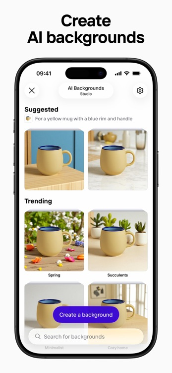

试了一周 Photoroom，终于不用再为产品图抠图熬大夜
帮朋友打理电商店铺，本来只是想找个省时间的抠图工具，结果发现 Photoroom 的 AI 改色、扩图功能连 Photoshop 都要靠边站。
上周帮一个开淘宝店的朋友做产品图。他是做小饰品的，拍了两百多张照片，每张都要手动抠白底——用魔棒、用钢笔、用选区调整，一天下来眼睛都花了。我本来想找个在线抠图工具快速搞定，结果顺手装了 Photoroom，这一用就收不住了。
第一次打开的感觉
说实话，Photoroom 的界面比我想象中清爽。没有密密麻麻的工具栏，核心功能就摆在最显眼的位置：导入图片，然后自动抠图。它的photoroom官网我是直接搜出来的，下载很简单，注册支持邮箱、Google、Apple 三种方式，我用 Google 账号一键登录，十秒钟搞定。
免费版就能直接上手——每月有 250 次导出生成额度，核心抠图功能不限次数，只是导出会带水印。对于偶尔做图的人来说足够了，但要是天天批量出图，升级 Pro 会更划算。年付大概九十刀，比月付十三刀省不少。
抠图是基本功，但 Photoroom 做得确实不一样
导入那张最让我头疼的图片——一件金属质感的小吊坠，背景是杂乱的桌面。我之前用另一个在线工具抠了五分钟还留着一圈灰白的毛边，Photoroom 点下去不到两秒，干净利落地把吊坠整个扣了出来。

后面我特意挑了几张"难题"试：一件透明塑料袋装的商品、边缘带细碎头发的人像局部、主体和背景颜色几乎一样的棕色摆件。结果除了透明塑料袋需要手动擦一下边缘，其他都一次过。它不是简单地找颜色差异，而是真的在"识别主体"——这一点和传统的色彩抠图工具完全不一样。
抠完之后直接选白底、纯色，或者自定义颜色值。电商平台要求的标准白底图，点一下就出来了。我朋友说他之前在工作室找人做一套白底图要五十块，现在自己就能搞定。
AI 改色才是真·省钱神器
抠图够用也就那样，真正让我觉得 Photoroom 值的是 AI 改色这个功能。
朋友的店铺里有一款手机壳，五个颜色。传统做法是每个颜色都要单独拍一套照片，因为颜色不同、打光也会有细微变化，后期还得统一色调。现在他拍了一张黑色的，我用 Recolor 工具一键生成了白色、粉色、蓝色、薄荷绿四个版本。
最神奇的是改色的时候，手机壳上的品牌 Logo 和按钮保持了原色，只替换了塑料外壳的颜色。我后来在 Photoshop 里试了"替换颜色"，结果把 Logo 也一起染了，还得手动选区修回去。Photoroom 的 AI 知道哪些地方能改、哪些不能改——它不是瞎换颜色，是真的在理解"产品结构"。
改色还能保留材质纹理。比如一件牛仔外套从黑改红，布料的编织纹理和反光感都在，不会变成一块平涂的红色贴片。这一点对于服装卖家来说太重要了——买家看图的时候能摸到"质感"，这是纯色替换做不到的。
AI 扩图救了我一次紧急任务
有个朋友急着要一张 Instagram Story 规格的竖图做推广，她手里只有一张 1:1 的方形产品图。换以前我要么裁剪牺牲主体，要么在 Photoshop 里一点点补背景。这次直接用 Photoroom 的 AI Expand，上下各扩了一段，AI 自动分析了原有背景的渐变色和光影，生成的扩展区域过渡自然得像是拍出来的一样。

还有一次做横幅 Banner，产品图本来构图很紧凑，左右几乎没留白。用 AI Expand 横向一拉，两边自动生成了匹配的背景区域，加文字加 CTA 按钮直接用——整个横幅从导入图片到出稿，不到两分钟。
用下来的几个小吐槽
说了这么多好话也得讲点实际的。
免费版导出有水印，这个没什么好说的，付费就没了。Pro 版每月 3000 的 AI 积分，Recolor、AI 扩图、虚拟模特这些高级功能都要消耗积分，纯抠图不费。如果是高频用的话，3000 积分大概能撑两到三周，用完就得等下个月或者加量包。
还有个小问题是 AI 改色对于有复杂图案的产品不太友好——比如一件印花 T 恤，底色和印花颜色反差大，AI 容易搞混哪些是底色哪些是图案。金属反光物体改色后质感也容易打折扣，需要手动微调一下。这些都是小概率场景，大部分情况一次出活——遇到边缘问题可以去photoroom文档找对应的手动修图教程。
适合谁
如果你是电商卖家、自媒体内容创作者、或者偶尔需要处理产品图的设计师，Photoroom 绝对值得装。它帮你省下来的时间——或者说帮你省下来的外包费用——远不止 Pro 的订阅费。
不适合的场景也有：如果你已经有完整的 Photoshop 工作流、或者需要复杂的合成修图（比如人像精修、场景合成），Photoroom 帮不上太多忙。它专注在产品图这一个方向，把这件事做到极致，其他的不做。
最后
我花了大概两天把朋友店铺两百多张产品图全部处理完，换以前这活儿至少得一周。Photoroom 最打动我的不是哪个单一功能有多强，而是它把"产品图处理"这条链路真的打通了——从抠图、改色、扩图到换背景，一个工具全搞定，不用在 Photoshop、在线工具、手机 App 之间来回切换。
现在我手机和电脑上都装了，随时随地能处理。对了，关于 Photoroom 的安装包和使用资料，我顺手在GitHub、Gitee、GitCode 三个仓库各存了一份备份，国内用户访问哪个快用哪个。